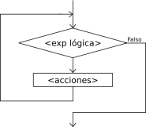
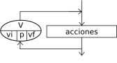

3: Repetint Tasques amb Bucles
3.1. El Bucle while
El bucle while és una estructura de control que permet repetir un bloc de codi de manera contínua mentre una condició específica es mantinga com a True.

El programa avalua la condició a l'inici de cada repetició (o iteració). Si és True, executa el bloc de codi; si és False, el bucle acaba i el programa continua amb la següent instrucció.
La sintaxi del bucle while és la següent, on el bloc d'instruccions ha d'estar indentat:
while <condición>:
# instruccions a repetir
Perquè un bucle while no s'execute indefinidament, és crucial que alguna de les variables involucrades en la condició canvie el seu valor dins del bucle, de manera que en algun moment la condició es torne False.
# Exemple de conversió de temperatures de 32°F a 72°F
temp = 32
print("fº cº")
while temp < 73:
print(temp, " ", int((temp-32)*5/9))
temp = temp + 1 # Aquesta línia és crucial per a evitar un bucle infinit
# Resultat
fº cº
32 0
33 0
34 1
35 1
36 2
…
70 21
71 21
72 22
Si la condició d'un bucle while mai es torna False, es produeix un bucle infinit, la qual cosa farà que el programa es "congele" i mai acabe.
Encara que while és flexible, existeix una forma de bucle més adequada per a quan coneixem per endavant el nombre exacte de repeticions.
3.2. El Bucle for i range()
El bucle for és l'estructura ideal quan necessitem iterar sobre una seqüència d'elements (com una llista) o quan volem repetir un bloc de codi un nombre específic i predefinit de vegades.

Per a generar seqüències de nombres sobre les quals iterar, el bucle for es combina comunament amb la funció range().
La funció range() pot usar-se de tres maneres per a generar seqüències numèriques:
range(fin): Genera una seqüència de nombres des de0fins afin-1.range(inicio, fin): Genera una seqüència des d'iniciofins afin-1.range(inicio, fin, paso): Genera una seqüència des d'iniciofins afin-1, avançant depasoenpaso.
La sintaxi del bucle for és:
for <variable> in <secuencia>:
# instruccions
En cada iteració, la variable prendrà el següent valor de la seqüència fins que s'hagen recorregut tots els elements. Comparat amb while, el bucle for amb range() és més concís i menys propens a errors de cicles infinits per a repeticions comptades.
# Mateix exemple de conversió de temperatures amb un bucle for
print("fº cº")
for temp in range(32, 73): # range(32, 73) genera nombres de 32 a 72
print(temp, " ", int((temp-32)*5/9))
Ara que dominem el flux dels nostres programes, és el moment d'aprendre a manejar no només dades individuals, sinó col·leccions senceres d'elles.
3.3. Alteració de l'execució dels bucles
En Python es poden fer salts en el flux d'execució dels bucles, però d'una manera limitada i controlada.
break
Ix d'un bucle (for o while) immediatament.
for i in range(10):
if i == 5:
break
print(i)
# Eixida: 0, 1, 2, 3, 4
continue
Salta a la següent iteració del bucle, sense executar la resta del codi de dins
for i in range(5):
if i == 2:
continue
print(i)
# Eixida: 0, 1, 3, 4